We Made It!
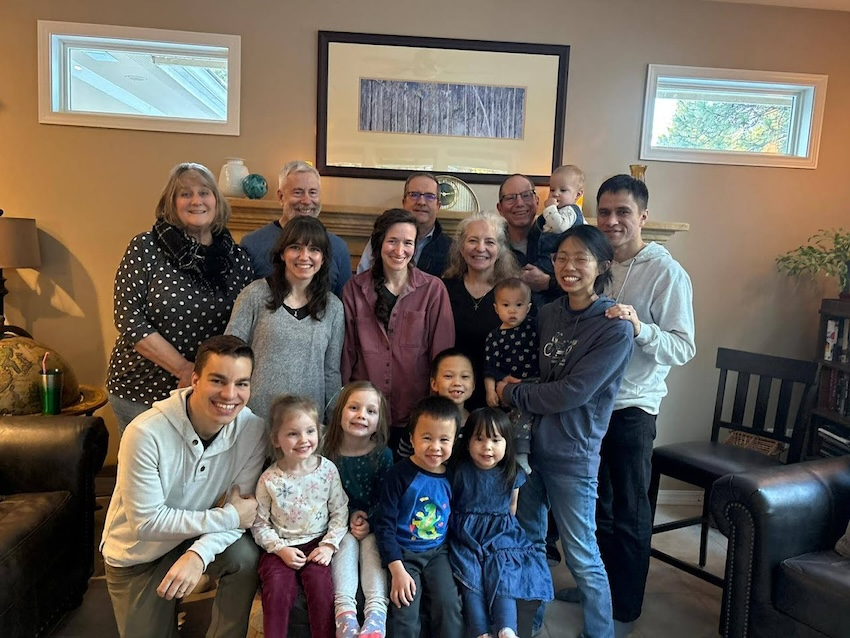 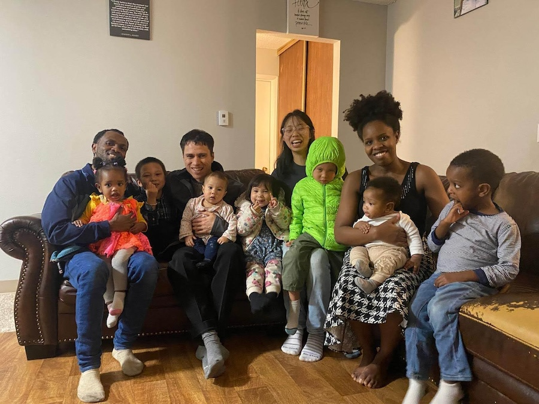 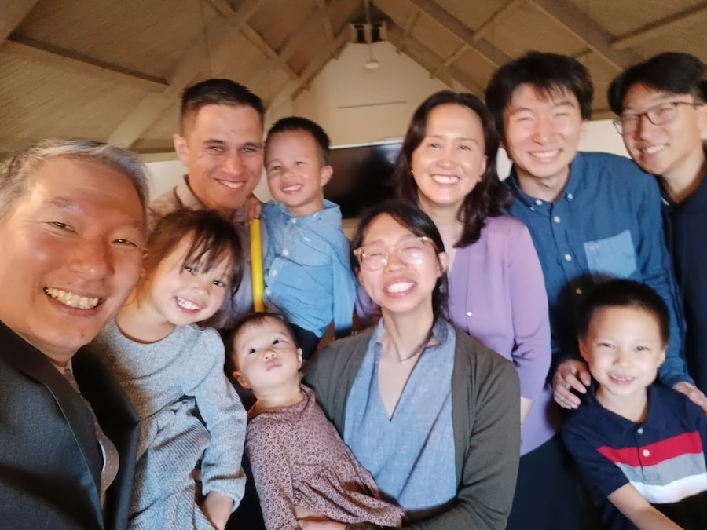 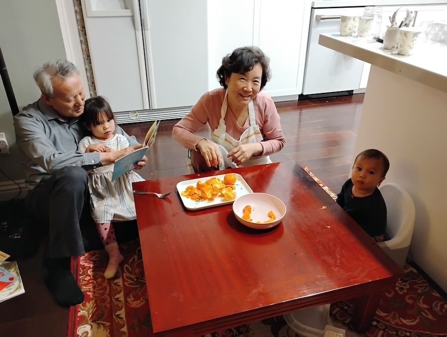 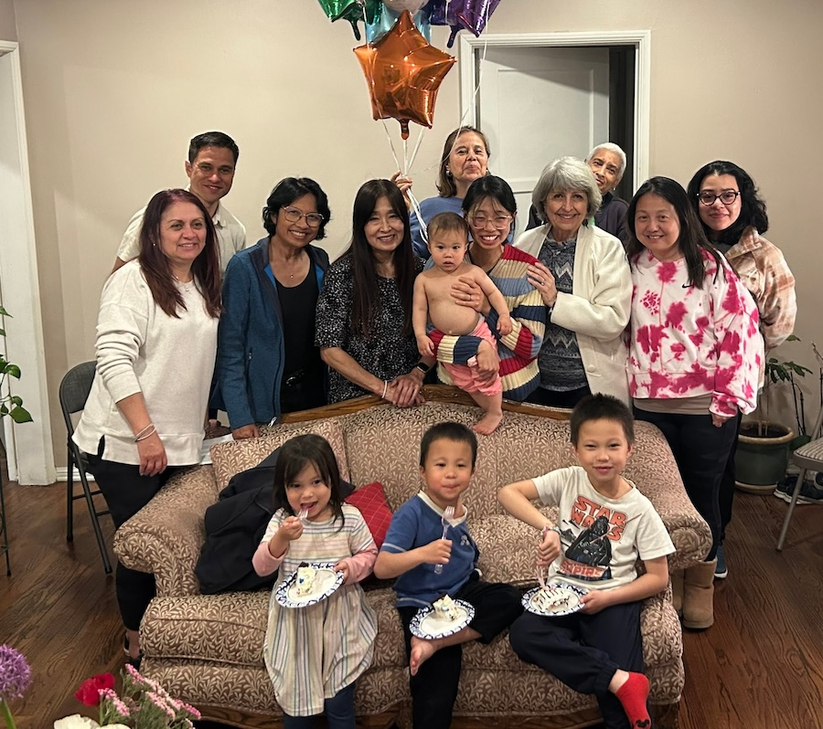 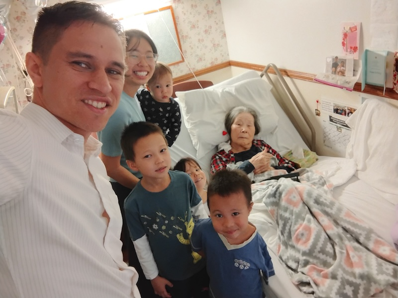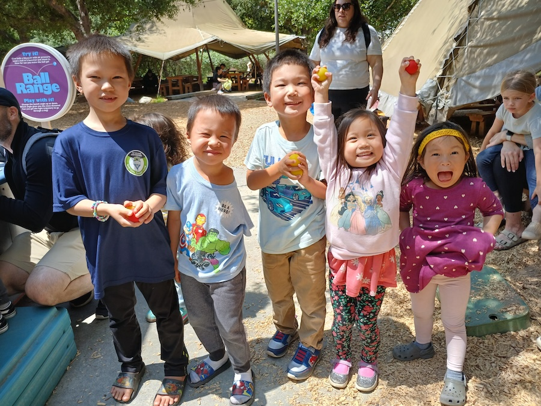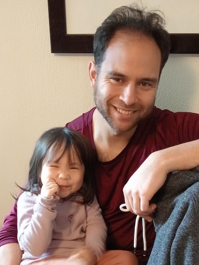
Pictures from our time in the States with churches, family and friends
Though it has been so good to see friends and family in the States for the last six months, it is wonderful to be back in Cambodia. We have been here in country for about a month – one week in Phnom Penh running paperwork and getting over jet-lag, and the rest in our new home in the city of Banlung, Ratanakiri province.
We have a lot to be thankful for already, and just wanted to share this with you all, that you may join us in exalting our great God for all that He does, big and small.
Thank the Lord for His Provision with our Children
It has been good to see the kids settling into the new city as well. Initially, to be honest we were somewhat concerned about this, especially due to passing comments made by the kids about how they will miss America, and then how much they will miss our old house, old friends, and old church in Phnom Penh. As left Phnom Penh early morning June 6th, it seemed like the more we talked about the importance of following the Lord’s calling, of trusting God’s protection and provision, and all of the things we had to look forward to in our new home in Ratanakiri, the more they talked about how much they will miss all of what we left behind.
In the end though, it was us as parents who needed to trust God most of all, as He prepared their hearts. It’s hard to know exactly what goes on in the hearts of our children, but it seems that the breakthrough finally happened on the very first night we were here. As we setup our beds and mosquito nets, something caught the boys’ eye: a large beetle stuck to the netting, just a thin fabric’s width away from falling right on their pillows.
In a way that only an eldest son can, Jonathan (the ring-leader of our motley crew) set the tone for the rest of the children, declaring: “I’m going to like it here, Ratanakiri has a lot of bugs.”
Praise God for the bugs.
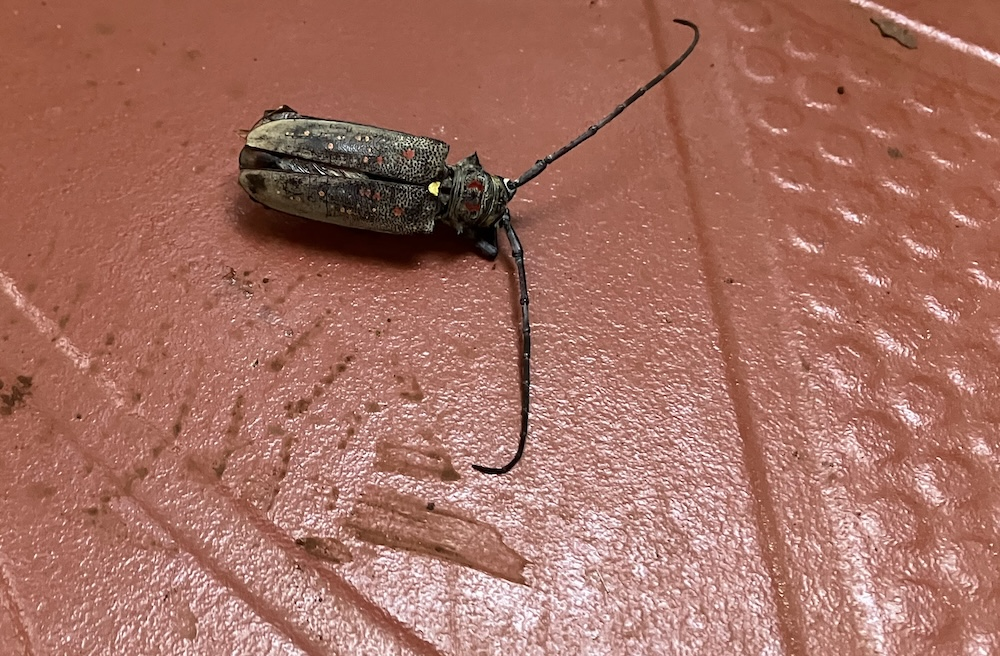
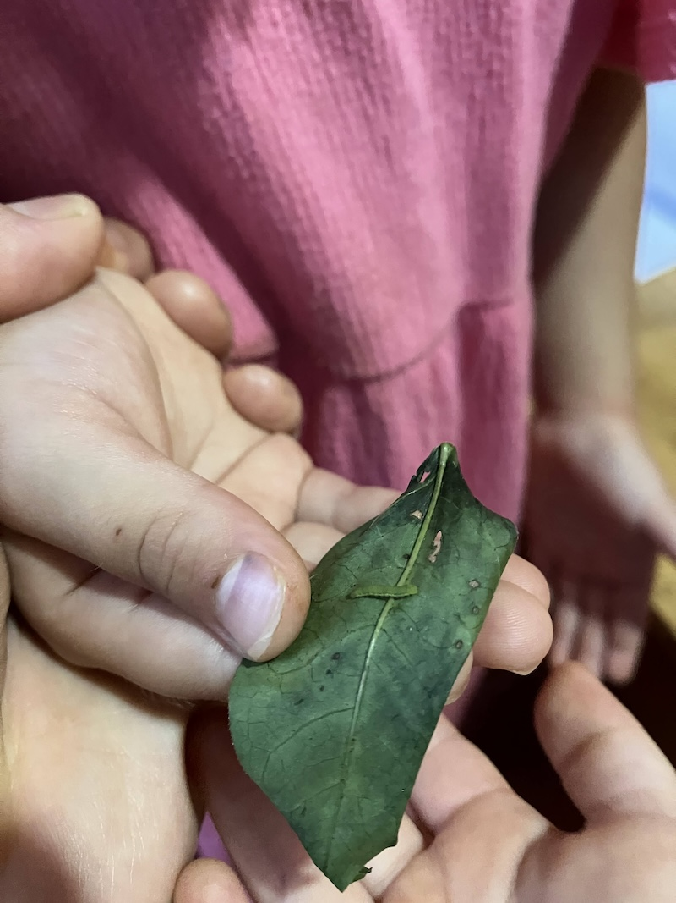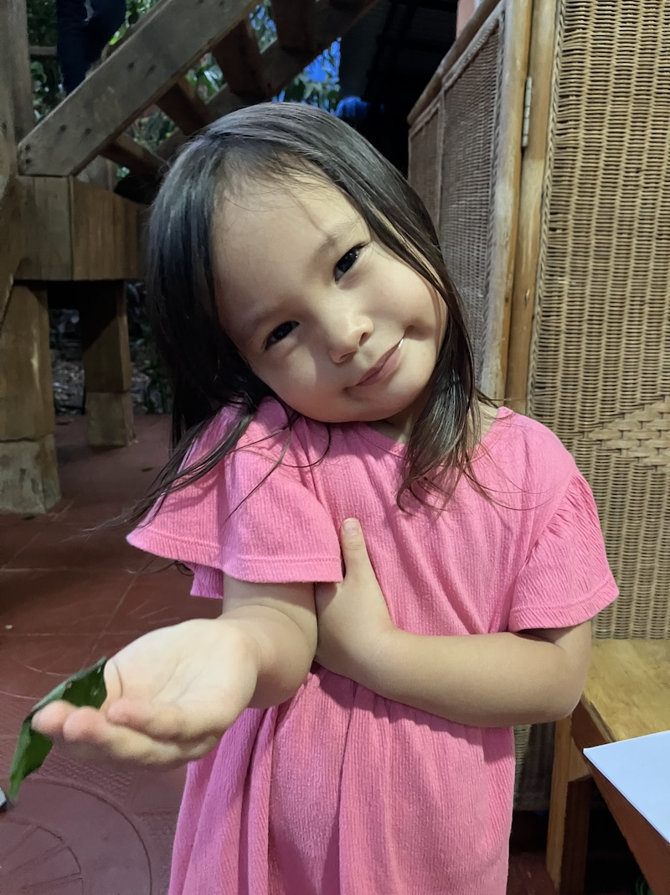
Thank the Lord for His Guidance over His Church
It has been wonderful joining in with the local congregation here in town. As we shared before, one of the pastors offered to rent out his house, which conveniently is about 100 yards away from the church building.
We have loved getting to know the saints here. Leading up to our original decision to move up here, the other missionaries had told us of the vibrancy and steadfastness of the faith of the local believers here, and this last month has only confirmed that.
Numerous examples could be given here, but I wanted to share about one event in particular as an encouragement, as well as an answer to prayer.
One of the big prayer requests we shared during our time in the States is for the Cambodian church to grow in internalizing and taking personal responsibility for their role in the Great Commission.
You can imagine how we felt then when, on our very first Sunday here, the pastor preached on Romans 15 and Paul’s heart to go to Spain. But the elders were not content to just talk about the importance of the church being involved in reaching the nations. The pastor then announced that the elders had come up with a plan for a group of eight (mostly pastors from this church and some Jarai churches in the next town over) to make an overnight trip to visit a national missionary, Pro-In, and his wife Si-Ma, in order to encourage them in their work among the Laotian people in Cambodia.
Some of you might remember Pro-In, from when we shared about Ratanakiri Province during our visit to the States. He and his wife are actually not ethnically Khmer - they are Bunong, but among the first missionaries that any Cambodian church has sent out. Here then is a Khmer Church, partnering with some Jarai churches to encourage a Bunong missionary family in their efforts to reach the Laotians.
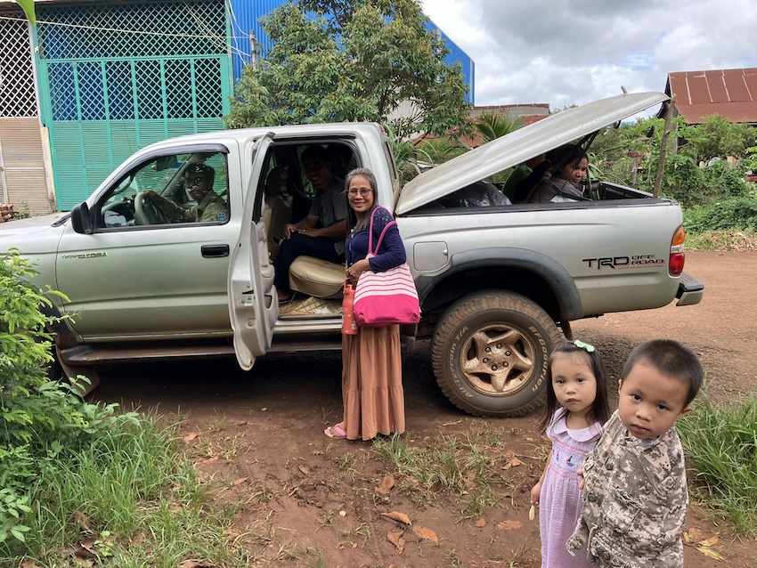
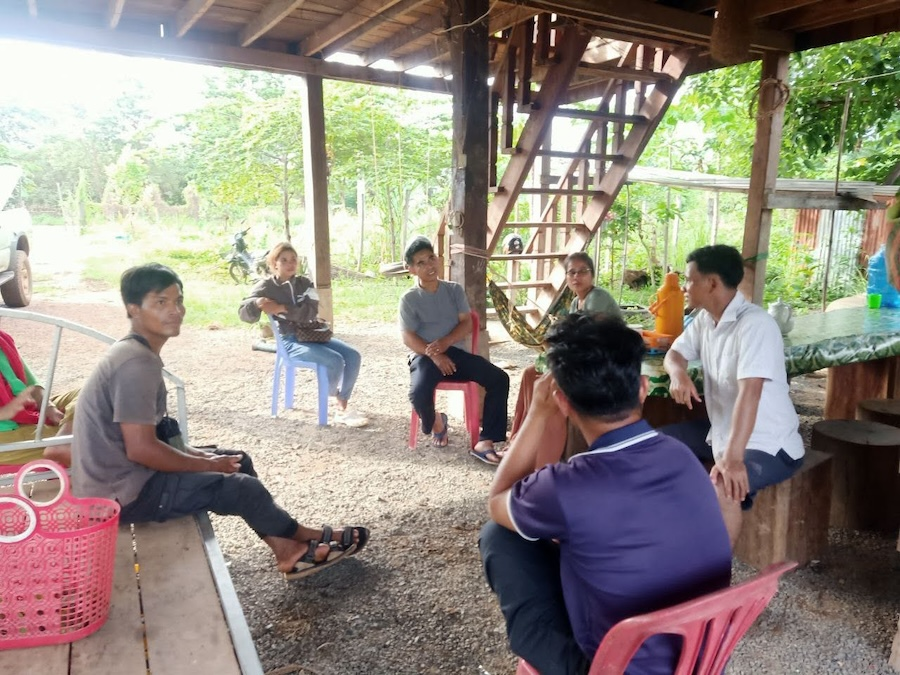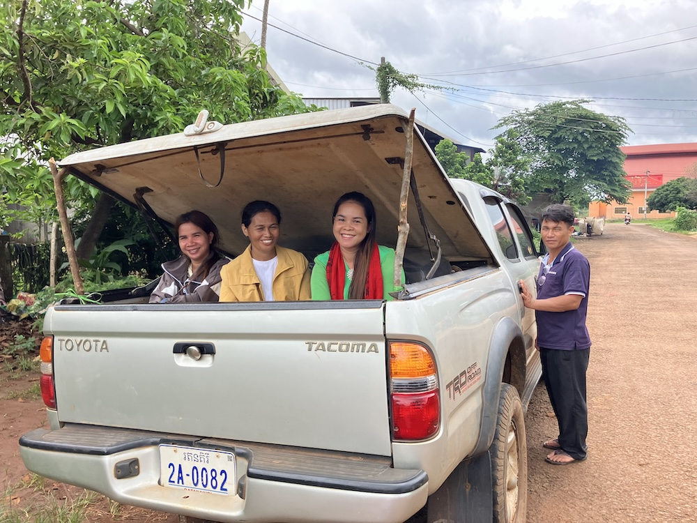
We felt not unlike Rhoda and the church in Jerusalem - active in intercession for this very thing, yet full of surprise (to the point of incredulity) when God actually answers.
Praise God for building His Church.